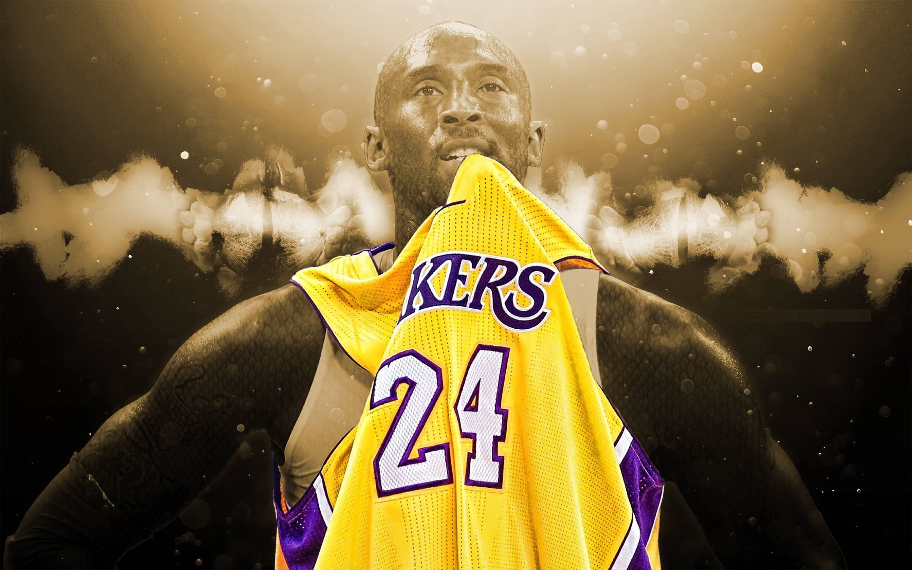

Kobe Bean Bryant(born 23 August 1978 - January 26, 2020) also nicknamed Black Mamba,was an American professional basketball player, who helped lead the Los Angeles Lakers of the National Basketball Association (NBA) to five championships
About
Bryant, whose father also played professional basketball, entered the NBA draft straight from high school. He was picked by the Charlotte Hornets in 1996 but was soon traded to the Los Angeles Lakers. When the 1996–97 season opened, he was the second youngest NBA player in history. Bryant, a shooting guard, helped the Lakers win five championships (2000–02; 2009–10). In 2008 he was named the league’s Most Valuable Player. He retired following the 2015–16 NBA season. In addition to his professional accomplishments, Bryant was a member of the Olympic gold medal-winning U.S. men’s basketball teams in 2008 and 2012. In 2015 he wrote the poem “Dear Basketball,” which served as the basis for a short film (2017) that he narrated. The work won an Academy Award for best animated short film. In 2020 Bryant died in a helicopter crash.